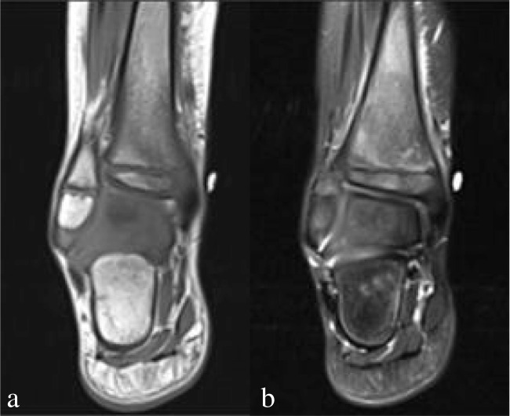
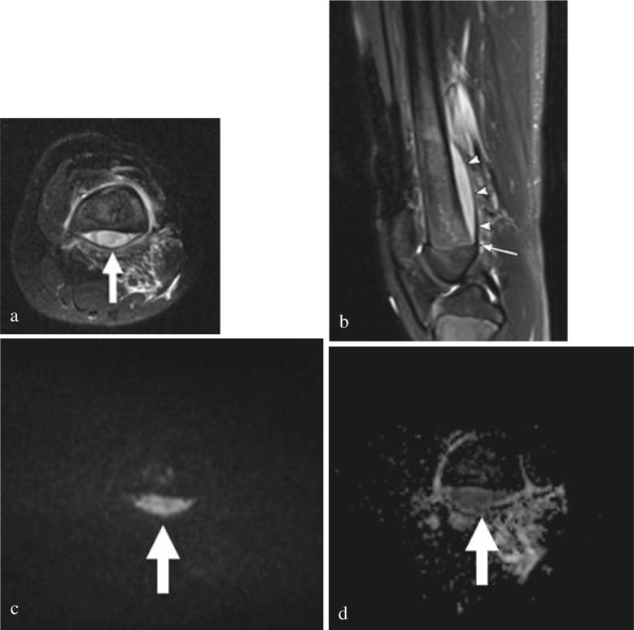
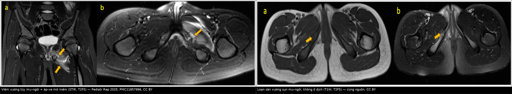

6179 — Viêm xương tủy cấp ở trẻ: MRI sớm, áp-xe dưới màng xương và cái bẫy "u Ewing" / Acute haematogenous osteomyelitis in children
Tags: pattern:phu-tuy-xuong pattern:ap-xe-duoi-mang-xuong pattern:ap-xe-trong-tuy pattern:day-mang-xuong pattern:ngam-thuoc pattern:han-che-khuech-tan vung:xuong-dai vung:khop vung:khung-chau anatomy:metaphysis protocol:XR-xuong protocol:MRI-xuong protocol:DWI score:Jansson-CRMO
Mức chắc chắn (certainty): tổng hợp y văn (literature synthesis) — ghép tổng quan protocol MRI nhanh ở trẻ (Pediatric Radiology 2026, PMC13134995), đoàn hệ 105 trẻ viêm xương tủy cấp (AHO) có áp-xe định nghĩa trên MRI (PMC13395681), đoàn hệ 218 trẻ về chỉ định mổ (PMC11887127), tổng quan hình ảnh nhiễm trùng cơ xương nhi (PMC11166598), bài học CRMO (PMC13475068) và 4 ca nguyên văn có ảnh (PMC13134995, PMC11857996). Chỗ dựa vào y văn kinh điển (mốc X-quang 10–14 ngày) được ghi rõ.
Câu chốt: AHO là cấp cứu nhiễm khuẩn xương, và X-quang bình thường ở ngày 3–5 KHÔNG loại trừ — trong khi MRI là chốt (protocol nhanh có giá trị tiên đoán âm 97% khi làm đúng, PMC13134995). Ba con số định hình thái độ: (1) áp-xe trong tủy/dưới màng xương gặp ở 42,9% trẻ AHO, và nhóm này 75,6% phải mổ (PMC13395681); (2) chỉ định mổ thực hành là áp-xe trong tủy hoặc màng xương bị đẩy > 2 mm, hoặc không đáp ứng kháng sinh 3–4 ngày (PMC11887127); (3) MRSA tạo áp-xe 71% và cần mổ 91% ca, so với 62% ở MSSA (một nghiên cứu được dẫn trong PMC11887127; không ghi tên vì chỉ đọc qua bài thứ cấp).
Phân vai với bài khác: 370 phủ nhiễm trùng cơ xương khớp nói chung; 6105 phủ hoại tử xương vô khuẩn ở trẻ điều trị ALL; 6178 phủ đau bụng cấp — bài này chỉ đi sâu chuỗi quyết định của AHO: MRI lúc nào, đọc gì, khi nào chọc/dẫn lưu, và phân biệt với Ewing – CRMO – LCH.
1. Tổng quan bệnh học – cơ chế hình ảnh (TẠI SAO MRI thấy trước X-quang)
1.1 Cơ chế: vòng mao mạch chậm ở hành xương
- Hành xương (metaphysis) ở trẻ có mao mạch tận cùng dạng vòng (hairpin capillary loops) chảy rất chậm, ngay sát sụn tiếp hợp. Khi có nhiễm khuẩn huyết (thường từ ổ niêm mạc), vi khuẩn dừng lại ở đây và sinh sôi trong tủy xương — đó là lý do AHO luôn bắt đầu ở hành xương, không phải ở thân xương.
- Màng xương ở trẻ lỏng lẻo, dễ bị mủ bóc tách → áp-xe dưới màng xương. Ở trẻ < 18 tháng, còn mạch xuyên sụn nối hành xương với đầu xương → nhiễm có thể lan vào đầu xương/khớp; đây là lý do trẻ nhỏ cần cản quang để không bỏ sót ổ ở phần sụn chưa cốt hóa (PMC13134995).
- TẠI SAO MRI thấy trước X-quang: phù tủy xương là nước tự do tăng trong tủy, và nước kéo dài cả T1 lẫn T2 → tủy tối trên T1, sáng trên T2/STIR. X-quang chỉ thấy khi đã mất 30–50% khoáng xương hoặc có phản ứng màng xương — theo kinh điển phải 10–14 ngày sau khởi phát. Vì vậy phim bình thường ở ngày 5 là chuyện bình thường, không phải bằng chứng loại trừ.
- TẠI SAO áp-xe sáng trên DWI và tối trên ADC: mủ đặc, tế bào nhiều → khuếch tán nước bị hạn chế → tín hiệu cao ở b = 800–1.000 s/mm² và thấp trên bản đồ ADC. Đây là cơ sở để thay cản quang bằng DWI trong protocol nhanh — nhưng phải xem ADC, vì phù mô mềm cũng có thể "sáng" trên DWI do hiệu ứng T2 shine-through.
- Sinh hóa hỗ trợ: CRP tăng sớm và giảm nhanh (nửa đời 24–48 giờ); trong đoàn hệ 105 trẻ, CRP trung vị 63,5 mg/L ở nhóm có áp-xe so với nhóm không áp-xe (PMC13395681); hạ albumin và tỷ lệ CRP/lymphocyte cao là dấu hiệu áp-xe. Ngưỡng CRP 10,3 mg/dL (103 mg/L) có Se 67,7% / Sp 77,6% cho áp-xe dưới màng xương (một nghiên cứu được dẫn trong PMC11887127; không ghi tên vì chỉ đọc qua bài thứ cấp) — không đủ để chẩn đoán, chỉ để ưu tiên MRI.
1.2 Ngưỡng định lượng phải nhớ
| Mốc | Con số | Nguồn / ý nghĩa |
|---|---|---|
| Tần suất AHO | 2–20 / 100.000 trẻ/năm | PMC13134995 |
| Vị trí hay gặp | Xương đùi 46,5%, xương chày 31,0% (nhóm mổ đơn) | PMC11887127 |
| Áp-xe trên MRI | 42,9% (45/105) | PMC13395681 |
| Mổ ở nhóm có áp-xe | 75,6% (34/45) so với nhóm không áp-xe | PMC13395681 |
| Chỉ định mổ | Áp-xe trong tủy hoặc màng xương đẩy > 2 mm; không đáp ứng kháng sinh 3–4 ngày | PMC11887127 |
| MRSA | Áp-xe 71% vs MSSA; mổ 91% vs 62% | Nghiên cứu thứ cấp, dẫn trong PMC11887127 |
| CRP cho áp-xe dưới màng xương | 10,3 mg/dL — Se 67,7%, Sp 77,6% | Nghiên cứu thứ cấp, dẫn trong PMC11887127 |
| Protocol MRI nhanh | NPV 97% khi dùng đúng | PMC13134995 |
| X-quang có thay đổi | Kinh điển 10–14 ngày (cần mất 30–50% khoáng xương) | Y văn kinh điển, không trích từ bài OA đã tải |
| CRMO | 1/250.000–1/1.000.000 trẻ | PMC13475068 |
2. Mẫu hình + chẩn đoán phân biệt theo vị trí (gamut)
2.1 Gamut theo vị trí tổn thương
- Hành xương xương dài (đùi, chày, xương cánh tay): thể điển hình — phù tủy khu trú sát sụn tiếp hợp, mô mềm cạnh xương phù, áp-xe dưới màng xương.
- Khung chậu — gai ngồi–mu (ischiopubic synchondrosis): trẻ tuổi học đường (ca trong bài: 8 và 11 tuổi); bất đối xứng và loạn sản xương sụn (osteochondrosis) là bẫy lớn — phù tủy nhẹ quanh sụn hơi to, không có ổ dịch, không phù mô mềm lan rộng (ảnh đối chiếu dưới đây).
- Cột sống: viêm đĩa–đốt sống; đau lưng + sốt, đĩa đệm hẹp, phù hai đốt kề.
- Xương đòn: vị trí ưa thích của CRMO (viêm xương tủy đa ổ tái phát mạn), không phải AHO điển hình.
- Mấu chậu trước trên / gai chậu: viêm xương vùng mấu (apophysis) ở trẻ vận động nhiều; dễ nhầm bong gân/avulsion.
- Xương bàn–ngón chân: AHO bàn chân ở trẻ nhỏ; X-quang rất dễ âm tính, MRI là chốt.
2.2 Gamut theo có/không có ổ dịch (quyết định mổ)
- Không ổ dịch: AHO phù tủy đơn thuần, viêm tủy xương mạn, CRMO, LCH, bạch cầu cấp, phù do bất động/stress — kháng sinh ± theo dõi.
- Có ổ dịch: áp-xe trong tủy, áp-xe dưới màng xương, áp-xe mô mềm/pyomyositis, viêm khớp mủ kèm theo — dẫn lưu là điều trị chính, kháng sinh đơn thuần thất bại.
- Ổ dịch giả: mô u hoại tử (Ewing), ổ xuất huyết, nang xương — không dẫn lưu mù.
3. Bảng so sánh phân biệt (ma trận đối chiếu)
| Thực thể (entity) | Hình ảnh điển hình | Chốt vào (rule-in) | Chốt loại (rule-out) | Gợi ý xác nhận |
|---|---|---|---|---|
| AHO không áp-xe | Phù tủy khu trú hành xương, T1 thấp, T2/STIR cao, phù mô mềm cạnh xương, không ổ dịch | Đau + sốt + CRP tăng + phù tủy khu trú sát sụn tiếp hợp | Phù lan tỏa cả thân xương, đối xứng nhiều xương, CRP gần bình thường → nghĩ CRMO | MRI + cấy máu trước kháng sinh |
| AHO có áp-xe dưới màng xương | Ổ dịch dưới màng xương, màng xương bị đẩy, DWI cao / ADC thấp; màng xương đẩy > 2 mm | Ổ dịch hạn chế khuếch tán + màng xương đẩy > 2 mm | Ổ dịch không hạn chế khuếch tán, không đẩy màng xương → phù/máu tụ | MRI + DWI/ADC; CRP > 103 mg/L hỗ trợ |
| U Ewing | Tổn thương thấm xuyên (permeative), vỏ xương mất liên tục, khối mô mềm lớn, có mineral hóa mô mềm, không ổ mủ | Khối mô mềm lớn + phá vỏ + không ổ dịch hạn chế khuếch tán | Ổ dịch đơn thuần, màng xương còn liền, CRP cao đơn thuần → nghĩ nhiễm | Sinh thiết sau khi hội chẩn; tránh corticoid trước chẩn đoán |
| CRMO (viêm xương tủy đa ổ tái phát mạn) | Nhiều ổ, đối xứng, hành xương, xương đòn, không áp-xe; tái phát > 6 tháng | ≥ 2 ổ xương + sinh thiết vô khuẩn + đáp ứng tiêu chuẩn Jansson | Một ổ đơn độc có ổ dịch + cấy dương → AHO | Jansson: 2 tiêu chuẩn chính hoặc 1 chính + 3 phụ |
| LCH (tế bào Langerhans) | Tiêu xương bờ rõ, có thể lún đốt sống, không phù mô mềm nhiều | Tiêu xương bờ rõ + tổn thương nhiều xương + không ổ dịch | Phù tủy lan tỏa, màng xương đẩy, CRP rất cao → nghĩ nhiễm | Sinh thiết; CD1a/langerin |
| Viêm khớp mủ / viêm khớp nhiễm | Tràn dịch khớp lớn + dày màng hoạt dịch, có thể kèm AHO sát khớp | Tràn dịch + không chịu cử động + CRP cao | Không tràn dịch, không đau khớp → loại | Siêu âm khớp + chọc hút đếm tế bào/cấy |
| Loạn sản xương sụn gai ngồi–mu | Sụn hơi to, phù tủy nhẹ quanh sụn, không ổ dịch, không phù mô mềm lan | Đau khu trú, không sốt, CRP bình thường, không ổ dịch | Ổ dịch + phù mô mềm + sốt → AHO, không phải loạn sản | MRI; so bên đối diện |
3.1 Ba dấu hiệu định vị giúp đọc đúng trên mặt cắt
- Tủy xương vs mô mềm: phù tủy nằm trong vỏ xương, giới hạn bởi vỏ; phù mô mềm ở ngoài vỏ. AHO điển hình có cả hai, nhưng ổ dịch trong tủy mới quyết định.
- Dưới màng xương vs trong tủy: ổ dịch dưới màng xương nằm giữa vỏ xương và màng xương bị bóc, hình thấu kính, thuôn về hai đầu và không vượt qua sụn tiếp hợp (trừ trẻ < 18 tháng). Ổ trong tủy nằm trong lòng xương, không đẩy màng xương.
- Sụn tiếp hợp là hàng rào: ổ dịch dừng ở sụn ở trẻ > 18 tháng; nếu thấy tổn thương qua sụn vào đầu xương → nghĩ trẻ nhỏ hoặc không phải AHO (Ewing, LCH).
4. Protocol chụp + phân độ/tiêu chuẩn
4.1 Thứ tự thực hành
- X-quang 2 bình diện ngay: rẻ, loại trừ gãy xương/u xương, nhưng bình thường không loại trừ AHO.
- Siêu âm khi có khớp gần: phát hiện tràn dịch khớp, áp-xe dưới màng xương (dịch dưới màng xương dày), áp-xe mô mềm; hướng dẫn chọc hút.
- MRI là chốt — protocol nhanh, không an thần, không cản quang khi trẻ hợp tác và > 18 tháng:
- STIR coronal FOV lớn (hai chi dưới) để định vị ổ khi triệu chứng không khu trú;
- T1 coronal (không fat-sat) — phát hiện thay thế tủy;
- T2 fat-sat axial + coronal + sagittal — phù tủy, ổ dịch, mô mềm;
- DWI b = 800–1.000 + ADC — phát hiện áp-xe thay cản quang.
- Cản quang khi: trẻ < 18 tháng (phần sụn chưa cốt hóa), ổ dịch không rõ trên chuỗi không cản quang, hoặc nghi viêm khớp/áp-xe mô mềm.
- Cấy máu trước kháng sinh; chọc hút/dẫn lưu ổ dịch gửi cấy + tế bào + tinh thể (cạm bẫy giả gout — xem bài gối).
4.2 Chỉ định can thiệp (bằng số)
| Tình huống | Ngưỡng / tiêu chí | Hành động |
|---|---|---|
| Áp-xe trong tủy | Ổ dịch hạn chế khuếch tán trong lòng xương | Dẫn lưu/khoan giảm áp + kháng sinh |
| Áp-xe dưới màng xương | Màng xương bị đẩy > 2 mm | Rạch dẫn lưu (đặc biệt nếu MRSA) |
| Không đáp ứng nội khoa | Sốt/viêm khu trú kéo dài 3–4 ngày dù kháng sinh đúng | Chụp lại MRI → mổ |
| Nguy cơ cao MRSA | CRP > 103 mg/L, albumin thấp, ANC cao | Ưu tiên MRI sớm + hội chẩn mổ |
| CRMO | 2 tiêu chuẩn chính hoặc 1 chính + 3 phụ (Jansson) | Không dẫn lưu; NSAID ± bisphosphonate, theo dõi |
4.3 Sơ đồ quyết định (Mermaid)
flowchart TD
A["Trẻ đau chi + sốt + không đi được"] --> B["X-quang 2 bình diện"]
B --> C{"X-quang bất thường?"}
C -->|Không| D["MRI nhanh: STIR FOV lớn, T1, T2FS, DWI/ADC"]
C -->|Có hủy xương/u| E["Vẫn cần MRI để phân biệt nhiễm và u"]
E --> D
D --> F{"Phù tủy khu trú + ổ dịch?"}
F -->|Không ổ dịch| G["Kháng sinh IV + theo dõi 48-72 giờ"]
F -->|Áp-xe trong tủy hoặc màng xương đẩy > 2 mm| H["Dẫn lưu/khoan + kháng sinh"]
G --> I{"Sốt và CRP giảm sau 3-4 ngày?"}
I -->|Không| H
I -->|Có| J["Tiếp tục kháng sinh, MRI lại khi xấu"]
H --> K{"Cấy dương?"}
K -->|MRSA| L["Kháng sinh theo kháng sinh đồ, cân nhắc mổ lại"]
K -->|MSSA hoặc âm| J
5. Biến thể bình thường và cạm bẫy
- X-quang ngày 3–5 bình thường — không loại trừ; đừng chờ phim đổi (10–14 ngày) mới chụp MRI.
- CRMO bị điều trị như nhiễm khuẩn — trẻ đau nhiều xương, tái phát, CRP chỉ tăng nhẹ, MRI nhiều ổ đối xứng, không áp-xe; dẫn lưu/kháng sinh dài không giúp, cần NSAID và theo dõi. Phân biệt bằng cấy vô khuẩn + Jansson.
- Ewing bị gọi là "viêm xương tủy" — khối mô mềm lớn, phá vỏ, mineral hóa, không ổ dịch; sinh thiết trước khi dùng corticoid liều cao, và không dẫn lưu mù.
- Gai ngồi–mu hai bên không đối xứng ở trẻ tuổi học đường — loạn sản xương sụn là bình thường; chỉ lo khi có ổ dịch + phù mô mềm + sốt (ảnh đối chiếu dưới đây).
- DWI "sáng" không đồng nghĩa mủ — luôn xem ADC; phù mô mềm và máu tụ có thể sáng trên DWI.
- Bỏ sót viêm khớp mủ kèm theo — AHO sát khớp ở trẻ < 18 tháng dễ lan vào khớp; luôn đánh giá khớp kề trên MRI và siêu âm.
- Trẻ < 18 tháng không cản quang dễ bỏ sót ổ ở đầu xương — phần sụn chưa cốt hóa; đây là ngoại lệ được khuyến cáo dùng cản quang.
- Bất động kéo dài gây phù tủy (đau do nguyên nhân khác) — so bên đối diện, đối chiếu lâm sàng; đừng điều trị "viêm xương" chỉ vì phù tủy.
Phản biện trung thực: tỷ lệ 42,9% áp-xe / 75,6% phải mổ đến từ một đoàn hệ hồi cứu hai trung tâm 105 trẻ đã được chọn chụp MRI — không phải tần suất áp-xe của mọi ca AHO. Ngưỡng CRP 103 mg/L có Se/Sp chỉ 67,7/77,6% nên không dùng để loại trừ. Mốc 10–14 ngày của X-quang là kinh điển, không lấy từ bài OA đã tải.
6. Tự lượng giá — Blind Quiz
Ca 1 — Bé trai 5 tuổi, sốt 5 ngày, đau mắt cá trong phải, không đi được. X-quang chưa có gì. Nhìn hai ảnh MRI trước.

- Gợi ý (kịch bản dựng quanh ảnh): CRP tăng, bạch cầu bình thường; không có ổ dịch, phù mô mềm ít.
- Câu hỏi: dấu hiệu chính? Vì sao X-quang âm tính vẫn phải điều trị? Có cần mổ không?
Bấm để hiện đáp án (findings + chẩn đoán)
- Dấu hiệu: (a) T1 giảm tín hiệu loang lổ và (b) T2 tăng tín hiệu tương ứng ở hành–thân xương chày, phù mô mềm quanh xương, không có ổ dịch.
- Chẩn đoán: viêm xương tủy cấp không áp-xe (AHO phù tủy).
- Không mổ: không có áp-xe trong tủy, không có màng xương đẩy > 2 mm; bệnh nhi được điều trị nội khoa và ra viện.
- Vì sao X-quang âm tính: cần mất 30–50% khoáng xương mới thấy — thường 10–14 ngày sau khởi phát.
- Nguồn ảnh: Pediatric Radiology 2026 (PMC13134995), CC BY 4.0 — Hình 3, khung a–b.
Ca 2 — Bé gái 11 tuổi, đau gối không rõ vị trí 3 ngày, sốt. Xem bốn khung MRI.

- Gợi ý: màng xương bị đẩy, ổ dịch thuôn về hai đầu và dừng ở mức sụn sụn; CRP rất cao.
- Câu hỏi: ổ dịch nằm ở khoang nào? Vì sao nói đây là mủ chứ không phải phù? Thái độ điều trị?
Bấm để hiện đáp án (findings + chẩn đoán)
- (a) Ổ dịch tăng tín hiệu sau xương đùi; (b) màng xương giảm tín hiệu bị đẩy lên (mũi tên đầu), ổ dịch thuôn và dừng ở mức sụn sụn — không vượt sụn.
- (c) DWI b = 800 sáng, (d) ADC thấp = hạn chế khuếch tán → dịch đặc/mủ, không phải phù đơn thuần.
- Chẩn đoán: viêm xương tủy cấp + áp-xe dưới màng xương (subperiosteal abscess).
- Điều trị: rạch dẫn lưu (màng xương đẩy > 2 mm) + kháng sinh; đây là ca đã được mổ dẫn lưu trong bài gốc.
- Nguồn ảnh: Pediatric Radiology 2026 (PMC13134995), CC BY 4.0 — Hình 4, khung a–d.
Ca 3 — Hai trẻ đau vùng bẹn, không sốt. Nhìn ảnh ghép: bên trái có ổ dịch, bên phải thì không. Đoán trước khi mở đáp án.

- Gợi ý: bên trái sốt + CRP tăng, đi khập khiễng; bên phải không sốt, CRP bình thường, đau tăng khi vận động. Hai ca trong bài gốc: bé trai 8 tuổi (trái) và bé gái 11 tuổi (phải).
- Câu hỏi: vì sao bên phải không phải viêm xương tủy? Dấu nào quyết định? Có cần dẫn lưu bên phải không?
Bấm để hiện đáp án (findings + chẩn đoán)
- Trái: phù tủy + áp-xe mô mềm quanh gai ngồi–mu, phù cơ bịt trong — viêm xương tủy gai ngồi–mu (kèm viêm cơ mủ).
- Phải: sụn hơi to, phù tủy nhẹ và chỉ quanh sụn, không có ổ dịch, không phù mô mềm lan — loạn sản xương sụn (osteochondrosis), biến thể lành tính ở trẻ 8–12 tuổi.
- Dấu quyết định: có/không ổ dịch + phù mô mềm lan + CRP. Bên phải không dẫn lưu, chỉ giảm vận động và theo dõi.
- Cạm bẫy: hai bên gai ngồi–mu vốn không đối xứng; đừng gọi mọi phù tủy ở đây là nhiễm.
- Nguồn ảnh: Pediatric Reports 2025 (PMC11857996), CC BY 4.0 — Hình 1 (trái) và Hình 2 (phải); ảnh ghép letterbox, giữ nguyên khung.
Bài liên quan chéo
- 600 – Tổng quan Nhi khoa
- 300 – Tổng quan Hệ Cơ xương khớp
- 370 – Nhiễm trùng cơ xương khớp
- 6105 – Hoại tử xương ở trẻ điều trị ALL (hoại tử vô khuẩn — không phải nhiễm)
- 6178 – Lồng ruột ở trẻ (đau bụng cấp — phân biệt đau chi do bệnh bụng)
- 1986 – Viêm mô hoại tử ở trẻ (nhiễm mô mềm cấp)
Ảnh
- Ảnh tải từ Europe PMC / PMC (open access), giấy phép từng file trong
images/CREDITS.md. - Tên file:
6179_slug_Modality_SourceID.jpg.
Không dùng để chẩn đoán độc lập khi chưa có người hướng dẫn.